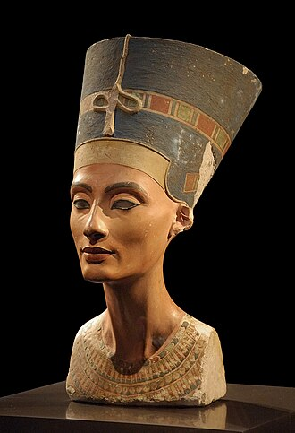

Antiguo Egipto
Nefertiti

Neferneferuatón Nefertiti (c. 1370 a. C.-c. 1331 a. C.) fue una reina de la dinastía XVIII del Antiguo Egipto, la primera Gran Esposa Real de Akenatón. Nació en Tebas y vivió durante el Imperio Nuevo (1500 a. C. - 1070 a. C.). Dentro de este periodo, cobró gran importancia durante el Periodo Amarniense (1353 a. C. - 1336 a. C.).
Nefertiti y su marido, Akenatón, son recordados por su radical reforma religiosa, promoviendo una forma temprana de monoteísmo centrado en el culto al disco solar Atón. Junto con Akenatón, reinó durante uno de los períodos más ricos del Antiguo Egipto.
Algunos académicos creen que, tras la muerte de Akenatón, Nefertiti gobernó brevemente bajo el nombre de trono Neferneferuatón, antes del ascenso de Tutankamón. Otros sugieren que también podría haber sido la figura conocida como Semenejkara. Aunque su identidad como faraón es debatida, hay consenso sobre su gran influencia como Gran Esposa Real durante el reinado de Akenatón.
Su desaparición de las representaciones artísticas coincide con la aparición de Semenejkara, lo que ha generado hipótesis sobre su transformación en este personaje. Algunos rastros femeninos en los nombres de trono de Semenejkara refuerzan la teoría de que Nefertiti adoptó esa identidad y luego cambió su nombre a Neferneferuatón, tal como hizo Hatshepsut generaciones antes.
Si Nefertiti efectivamente gobernó como mujer-faraón, su reinado estuvo marcado por la caída de Amarna y el retorno de la capital a Tebas.
En el siglo XX, Nefertiti se hizo mundialmente famosa tras el descubrimiento de su icónico busto, atribuido al escultor Tutmose. Esta escultura, que se conserva en el Neues Museum de Berlín, es una de las obras más copiadas del arte egipcio y conserva sus colores originales pese a sus más de 3300 años de antigüedad.
No se sabe casi nada de la vida de Nefertiti antes de su matrimonio con Akenatón. Escenas en la necrópolis de los nobles en Amarna mencionan que tenía una hermana llamada Mutbenret. También se hace referencia a una mujer llamada Tey, quien ostentaba el título de «Nodriza de la Gran Esposa Real», y a su esposo Ay, quien más tarde sería faraón, con el título de «Padre de Dios». Algunos egiptólogos creen que este título indica que Ay pudo haber sido el padre de Nefertiti, aunque no existe una fuente que lo confirme explícitamente.
Otra teoría propone que Nefertiti era hija de Ay y de una esposa anterior, y que Tey era su madrastra. Se sugiere también que de la unión entre Ay y Tey nació Mutnedymet, media hermana de Nefertiti, quien se casaría con Horemheb, lo que reforzaría la legitimidad de este último en su ascenso al trono. No obstante, estas ideas siguen siendo conjeturas basadas en títulos y relaciones indirectas.
También se ha planteado que Nefertiti podría haber sido hermana de Akenatón, aunque sus títulos no incluyen «Hija del Rey» o «Hermana del Rey», lo que hace improbable este parentesco. Otra hipótesis la identifica con la princesa mitania Taduhepa, basándose en el significado de su nombre («Ha llegado la bella mujer») y en la forma ovalada de su cráneo, posiblemente fruto de una práctica cultural extranjera. Sin embargo, esta teoría carece de pruebas concluyentes.
Se desconoce la fecha exacta del matrimonio entre Nefertiti y Akenatón, aunque se estima que ocurrió hacia 1350 a. C., antes de que él ascendiera al trono tras la muerte de su hermano mayor. Se sabe que la pareja real tuvo al menos seis hijas:
- Meritatón (c. 1348 a. C.)
- Meketatón (c. 1347 a. C.), fallecida prematuramente
- Anjesenamón (c. 1346 a. C.), esposa de Tutankamón
- Neferneferuatón-Tasherit (c. 1344 a. C.)
- Neferneferura (c. 1341 a. C.)
- Setepenra (c. 1339 a. C.)
En un relieve de caliza que formaba parte de un altar familiar, se muestra a Akenatón con su hija Meritatón, mientras Nefertiti sostiene a Meketatón en su regazo, y también aparece Anjesenpaatón (Anjesenamón). Aunque en su momento se creyó que Nefertiti podía ser la madre de Tutankamón, estudios genéticos han demostrado que no lo era.